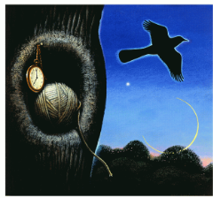

Lesson
Synopsis and What to Consider Before Reading
What ideas and skills will you develop in Synopsis and What to Consider Before Reading?
Understand and apply the central ideas and skills in Synopsis and What to Consider Before Reading.
Review the previous lesson and open any notes or evidence you want to use here.
Learn guideHow to complete this lessonLearn → examine → respond → collect evidence
- Read the Synopsis and What to Consider Before Reading guidance and identify the central idea or skill.
- Examine the examples, images, media, or supported text and record precise details.
- Apply the lesson idea to a specific text, scene, image, or example.
- Review your work, collect useful evidence, and complete the existing lesson check.
Key terms: · · ·
Vocabulary help
- How actions, dialogue, contrasts, visual choices, and stated positions reveal character or authorial stance.
- A meaningful gap between expectation and outcome, appearance and reality, or stated purpose and actual effect.
- The perspective, framing, or argumentative position that controls what the audience sees, knows, and evaluates.
- How exposition, conflict, rising action, climax, and resolution organize events and develop meaning.
Open any term for the shared definition and optional Frayer notes. Vocabulary work does not affect lesson completion.
In this Unit you will read the novel To Kill a Mockingbird by Harper Lee. Set in 1930's Alabama, this novel deals with a young girl's growing awareness of good and evil in the world around her. The novel opens with Scout about to begin school, and follows her over the next few years.

Background
A novel is a fictional prose narrative that is longer than a short story. A novel is fictional because its events and characters are imaginary or made up. Although the plot and characters may be based on actual events or people, a novel is not considered a factual account. A novel is prose because it is not drama or poetry. It is a narrative because it tells a story. A novelist creates a story of considerable length and complexity through a connected sequence of events involving a group of people in a specific time and place. Novels have plot, characters, setting and conflict.
Nella Harper Lee was born in the small town Monroeville, Alabama on April 26, 1926 to Amasa Coleman Lee, a lawyer and former newspaper editor, and Frances Finch Lee. The youngest of four, Harper Lee was a self-confessed tomboy who enjoyed reading and writing at a very young age. She went to the local grammar school and high school in Monroeville with author Truman Capote (In True Blood), upon whom the character Dill is said to be based.
After high school, Lee attended Huntingdon College in Montgomery, then transferred to the University of Alabama to study law. After three years, Lee Realized her passion was not law, but writing, and she quit school to move to New York just one semester short of receiving her law degree.
After moving to New York, Lee supported herself by working as an airline reservation clerk while writing short stories about her life in the South. In 1957, she submitted her short stories to the J.B. Lippincott publishing company. agents of the firm encouraged her to take a year to string her short stories into one major work. After two and a half years, Lee completed the novel in 1960, To Kill A Mockingbird was published.
To Kill a Mockingbird became an international success, and was eventually translated into over thirty languages. It won the Pulitzer Prize for fiction in 1961 and was adapted for screen in 1962. The film, starring Gregory Peck, was nominated for eight Academy Awards, including Best Picture. Peck received the Academy Award for Best Actor.
In 1966, Lee was appointed to the National Council of Arts by then President Lyndon B. Johnson, and has received several honorary doctorates from universities such as the University of Alabama, Sewanee University, and Spring Hill College in Mobile, Alabama.
Generally, Lee preferred a private existence, giving few interviews and speeches. After decades of silence, Lee was prompted by Oprah Winfrey to put pen to paper yet again, writing a letter which appeared in the July 2006 issue of Oprah's O magazine. The letter describes a time in Lee's life in which books were scarce, and there were no public libraries, yet her parents continued to read anything they could get their hands on to the young Lee. She lamented our modern-day lack of attraction to books, asking Oprah, "Can you imagine curling up in bed to read a computer?" and declaring, "I still plod along with books. I prefer to search library stacks because when I work to learn something, I remember it."
In November 2007, President George W. Bush presented Lee with the Presidential Medal of Freedom for her "outstanding contribution to America's literary tradition" at a ceremony at the White House.
In 2010, President Barack Obama awarded Lee the National Medal of Arts, the highest award given by the United States government for "outstanding contributions to the excellence, growth, support and availability of the arts.
While To Kill a Mockingbird was Lee's first published novel, it was not the first one she wrote. Go Set a Watchman was first written in 1957 and follows the lives of the characters in To Kill a Mockingbird later in their lives. It was originally rejected by the publishing house and in taking suggestions from her editor, Lee's story eventually became To Kill a Mockingbird.
Go Set a Watchman published in July 2015 was the only other novel that Lee ever published in her lifetime. Harper Lee died in her sleep on February 19, 2016, at the age of 89.
Historical Context
Harper Lee was born in 1926 in Monroeville, Alabama. Her father practiced law in the town and Harper Lee studied law at the University of Alabama. The southern states of the United States of the 1930's and 1940's of Harper Lee's girlhood were strongly influenced by their history of slavery which had officially ended with the American Civil War (1861-1865).
Some knowledge of the history of the American South, and of the Civil War of 1861- 65 in particular, is essential to a proper understanding of To Kill a Mockingbird. It is set in the period from 1933 to 1935, but the past is still strongly alive in the minds of the characters, and the moral and social issues with which the novel is concerned are those which were fought over in the Civil War.
Brief History Concerning Civil War
The bond between the states in the American Union was always fragile. From the time the original 13 colonies declared their independence from Britain in 1776 there was always the possibility that individual states would break away from the group. It was the issue of slavery which eventually caused the split between North and South in 1861.
Cultural Differences between North and South
The South was an agricultural society, deriving its wealth from the production of cotton, tobacco, rice, sugar and hemp on plantations worked by black slaves.
The Northern states had a more urban, industrialized economy and as time passed Northerners became more and more unwilling to condone what they felt to be the evil of slavery in the South.
The Southerners justified their practice by arguing that the black race was inferior and that the imported Africans were actually fortunate to be American slaves as their slavery brought them into contact with Christianity. The slave system was often enforced with great brutality, and Southern whites tended to regard their black slaves as ignorant, simple minded, lazy, irresponsible and in need of firm guidance from their white superiors. This attitude may be observed among the white inhabitants of Maycomb County in To Kill a Mockingbird.
Slaves had laboured on the cotton plantations of the South. After the Civil War, in which the Southern states were defeated by the Northern (or Yankee) states, African American slaves (referred to as Negroes at the time) were freed. However, often they became worse off economically because the use of new machinery was decreasing the demand for their labour.
The African-Americans, while no longer enslaved, did not have equal access to voting, education and employment opportunities. In 1929, the Great Depression in the United States led to a collapse of the economy. The Southern, mainly rural, states were the worst affected. Many white farmers became bankrupt and found themselves competing for a living with landless African Americans.
Harper Lee's novel should not be seen as a simple attack on white Southern culture, however. Whilst the author is indignant about the cruel treatment of African-Americans, she feels a nostalgic affection for some aspects of Southern tradition, and this is apparent in her novel.
Elements to Consider While Reading
Predicting
Before you read a story, you make guesses or predictions about what will happen based on the title and what you know of the author. You continue to make predictions about what will happen next and how the story will end. You should base your predictions on:
- what you already know about the characters
- what has already happened in the story
- what you know about people from your own experience
- the plots of other stories you have read
Point of View
|
Point of View |
Story Text |
Who’s Telling the Story |
|
first-person |
“I was getting fed up with saying goodbye. One month five kids disappeared from my shrinking class of Copelin High School.” (from The Visitor by Christine Pinsent-Johnson) |
a character from the story |
|
third-person limited |
Willy felt like he was spending his whole life saying goodbye. It seemed like every other day one more person left his class at Copelin High School. (adapted from The Visitor) |
a narrator who knows the thoughts of only one story character |
|
Third-person omniscient |
Copelin was a dying community. Moving vans and red-and-white U-haul trailers were a weekly sight on its pot-holed streets. (adapted from The Visitor) |
a narrator who knows everything |
Setting
The time and location in which a story takes place is called the setting. In some stories the setting is very important, but in other stories it is hardly mentioned. As you read a story or novel, ask yourself these questions about the setting:
- What does the author tell you about the place where the story happens?
- Are the characters in conflict with the setting?
- What does the setting tell you about the characters?
- How does the setting contribute to the atmosphere or mood of the story?
Characters
Ask yourself:
- Who are the main characters in the story? Who are the minor characters?
- Which of the characters do you identify with most?
- Do any of the characters remind you of people you know?
- Is the story told from the point of view of one or more of the characters?
- What events are the characters involved in?
Character Types
Round Characters: Characters who display several personality traits (like real people.)
Static Characters: these are characters who stay the same.
Stereotype Characters: Characters who behave in a predictable way. These characters all behave in the same way, they aren’t individuals. For example: the “jock,” the “nerd.”
Determining Character Traits
The writer establishes character, or personality, through words and actions. A successful writer will cause the reader to understand characters’ feelings in various situations. A character’s responses to conflicting situations, such as anger in one scene and tolerance in another, require the reader to determine which trait dominates within a person. A single action does not determine a trait, but it adds to an impression of a certain trait.
Identifying trait is often difficult. General descriptions such as “He cannot wait to obtain all the facts before he does something he later regrets” are not traits. A precise word is needed. “He is impulsive” identifies the trait that must be supported with details later. Because you are expanding your vocabulary continuously, the following word bank may be helpful.
|
Words to Describe Character Traits |
|||
|
abrupt |
determined |
indecisive |
responsible |
|
adaptable |
dishonest |
inflexible |
sarcastic |
|
affectionate |
domineering |
insecure |
secretive |
|
aggressive |
eccentric |
judgemental |
self-conscious |
|
ambitious |
energetic |
just |
selfish |
|
anxious |
enthusiastic |
loyal |
sensitive |
|
arrogant |
fair |
meek |
shrewd |
|
artistic |
fickle |
methodical |
sly |
|
blunt |
foolhardy |
modest |
sophisticated |
|
boastful |
forgiving |
moody |
spontaneous |
|
cautious |
frustrated |
nervous |
stubborn |
|
competent |
generous |
obstinate |
superficial |
|
conceited |
gentle |
open-minded |
tactful |
|
courageous |
gloomy |
outgoing |
timid |
|
creative |
happy |
outrageous |
truthful |
|
critical |
helpful |
patient |
uncertain |
|
cruel |
humble |
persistent |
uninhibited |
|
cunning |
imaginative |
proud |
unpredictable |
|
curious |
impatient |
quarrelsome |
weak |
|
decisive |
impetuous |
resourceful |
wise |
|
dependable |
impolite |
respectful |
|
Conflict
Conflict is the basis of every story. Conflict occurs when characters experience problems. We keep reading because we want to find out how the problems will be solved. Conflict can be serious, or light-hearted and humorous.
There are two basic kinds of conflict in literature: external conflict and internal conflict.
External conflict is the struggle between a character and something outside of him or her for example:
- Nature: weather/landscape/animals
- People: family/friends/strangers
- Situations: war/poverty/unemployment
Internal conflict is a struggle that takes place with a person. This struggle usually involves making choices:
- Between good and evil
- Between self-interest and helping others
Symbols
A symbol is an object, an animal, or a person that suggests something else, such as an idea or a belief. For example: a crown is a symbol for a monarch, a dove is a symbol for peace, a police officer is a symbol of law and order.
Recognizing symbols will help you understand the literature you read.
Symbols are usually:
- visual
- repeated several times
- related to the theme of the selection
Context Clues
Context Clues: Context clues are hints to meaning from other words or phrases in the sentence.
The following examples demonstrate context clues in action.
- I was a fragile child, often sick and small for my age. My grandmother always called me feeble.
You guess from the narrator's description of himself - “sick”, “small” - that feeble means weak. - I didn’t want the popsicle anymore so I discarded it in the garbage can.
You know from the speaker’s comments about the popsicle that he does not want it anymore, so you can conclude that discard means to throw away. -
Colour is inconceivable to someone born blind.
A blind person cannot imagine colour if it has never been in his visual experience; therefore, inconceivable means impossible to imagine.
Review the Critical Essay, Reading Guide, and Novel Study Questions before you begin so you know what ideas and evidence to collect while reading.